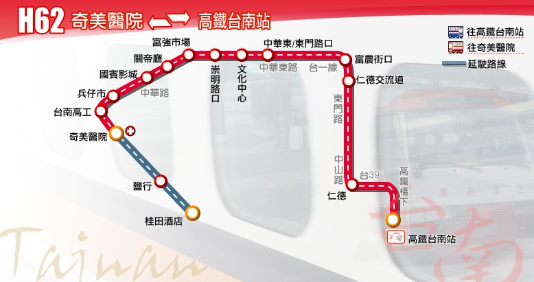

Tainan Bus for FUN
路線圖
路線資訊
票價表
時刻表
轉乘資訊
高鐵快捷公車 ─ 7651(H62) 路線圖
HSR Shuttle Bus 7651(H62), Route Map

查詢路線Google Map
高鐵快捷公車 ─ 7651(H62) 路線資訊
HSR Shuttle Bus 7651(H62), Route Information
起訖點
桂田酒店 － 奇美醫院 － 高鐵臺南站
營運公司
興南客運
首／末班車發車時刻
班距
固定班次 尖15離30
收費方式
免費
公車動態資訊
高鐵快捷公車 ─ 7651(H62) 票價表
HSR Shuttle Bus 7651(H62), Bus Fare
FREE
本路線上車往高鐵站免費
憑高鐵票根免費搭乘高鐵接駁車
惟起訖點其一須包含高鐵台南站
高鐵快捷公車 ─ 7651(H62) 時刻表
HSR Shuttle Bus 7651(H62), Bus schedule
高鐵快捷公車 ─ 7651(H62) 主要轉乘點資訊
HSR Shuttle Bus 7651(H62), Transfer information